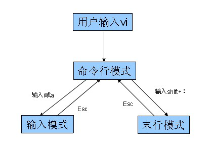

vi编辑器
类似于window下的记事本
vi编辑器是Linux下的标配，通过它我们可以创建、编辑文件。它是一个随系统一起安装的文本编辑软件。
1.三种模式
命令模式、插入模式、底行模式，每种模式下用户所能进行的操作是不一样的。
当我们处在编辑模式的情况下，和我们在Windows编辑器的使用相似。
三种模式的切换如下图所示：

通过上图我们发现，输入模式是不能直接切换到末行模式的，必须要先切回到命令模式（按ESC键）
2. 使用vi/vim编辑器
a) 打开/创建文件， vi 文件路径
b) 底行模式 :w保存，:w filenme另存为
c) 底行模式 :q退出
d) 底行模式 :wq保存并退出
e) 底行模式 :e! 撤销更改，返回到上一次保存的状态
f) 底行模式 :q! 不保存强制退出
g) 底行模式 :set nu 设置行号
h) 命令模式 ZZ（大写）保存并退出
i) 命令模式 u辙销操作，可多次使用
j) 命令模式 dd删除当前行
k) 命令模式 yy复制当前行
l) 命令模式 p 粘贴内容
m) 命令模式 ctrl+f向前翻页
n) 命令模式 ctrl+b向后翻页
o) 命令模式 i进入编辑模式，当前光标处插入
p) 命令模式 a进入编辑模式，当前光标后插入
q) 命令模式 A进入编辑模式，光标移动到行尾
r) 命令模式 o进入编辑模式，当前行下面插入新行
s) 命令模式 O进入编辑模式，当前行上面插入新行